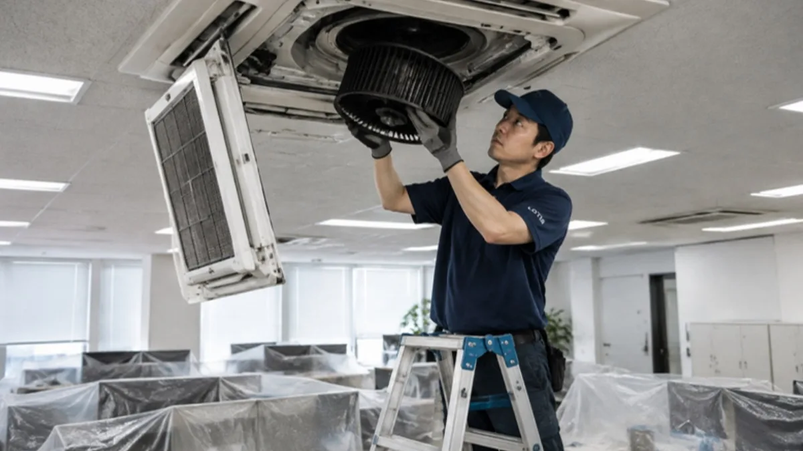
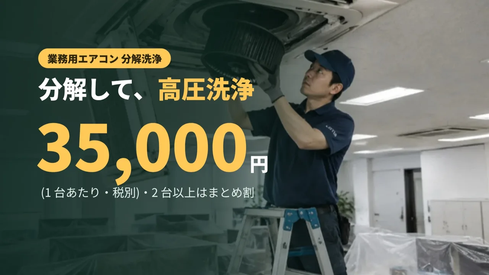
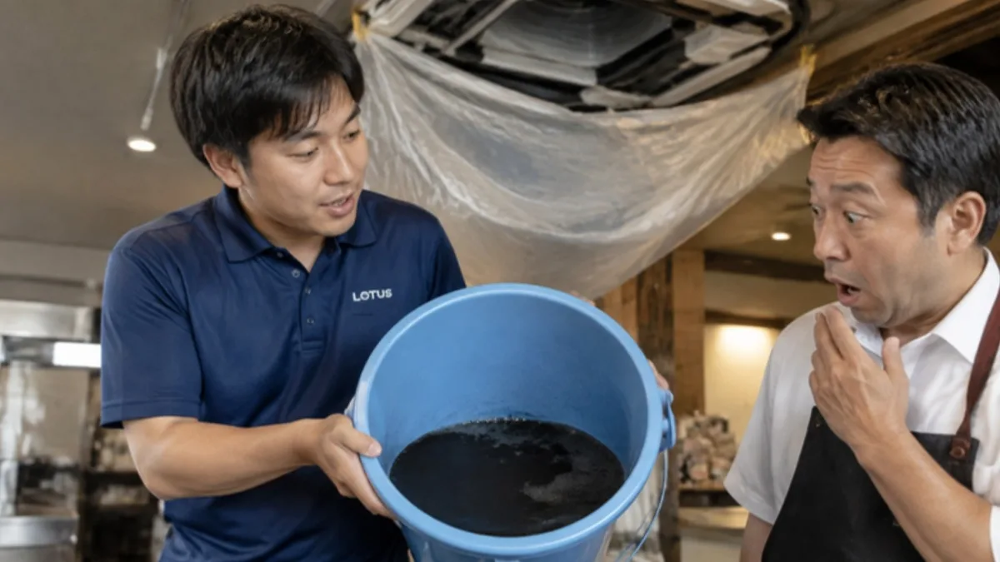
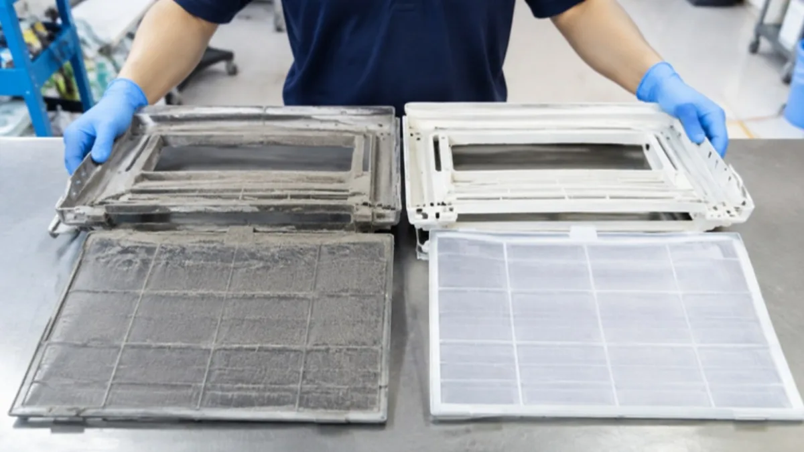

フィルター掃除ではとどかない、熱交換器やドレンパンまで洗います。
清掃サービス / 業務用エアコン洗浄
業務用エアコン洗浄 / オフィス・店舗・施設
天井のエアコン、
最後に洗ったのはいつですか。
天井カセット・天吊りの業務用エアコンを、分解して高圧洗浄。フィルターだけでなく、熱交換器やドレンパンの奥まで洗い、試運転まで行います。作業は営業時間外に。お店や事務所の手を止めません。
業務用エアコン 分解洗浄35,000円 / 台・税別
2 台以上まとめ割台数でお見積り


代表の現場経験
清掃の現場を、
通算 1,000 件以上。
代表は、清掃の現場に約 15 年。そのうち約 9 年は、清掃業界大手の社員と外部顧問として、清掃の現場と仕組みづくりに携わってきました。携わっていた頃の現場は、年間およそ 1,000 件。それが LOTUS クリーンケアサービスの土台です。賃貸物件の管理も手がけているので、退去後の部屋や共用部が「次の人を迎えられる状態か」という目で見ます。その経験を、分解洗浄の手順と、試運転・写真での報告に込めています。
LOTUS のなりたちを読む ›- 約 15年清掃の
現場経験 - 約 1,000件/年携わっていた頃の
現場数
台数の多い現場や広い施設にも、協力会社と連携して対応します。
エアコンのこんなサイン、出ていませんか。
- 電源を入れると、においがする
- 吹き出し口のまわりが黒ずんでいる
- 前より風が弱い、効きが悪い気がする
- 水がぽたぽた落ちてくる
- フィルター掃除はしているが、中は見たことがない
- 何年も洗っていない、いつ洗ったかわからない
フィルターの奥に、汚れはたまります。
フィルターで取りきれないほこりや油、湿気は、熱交換器やドレンパン、送風ファンにたまっていきます。においや風量の低下、水漏れの原因になるのは、たいていこの奥の汚れです。

洗い終えた水を、一緒に見てください。
分解洗浄では、受けた汚れ水をその場でお見せします。何がどれだけ出たのかが分かるので、次に洗う時期の目安にもなります。
- 熱交換器(フィン)のほこり・油
- ドレンパンのぬめり・カビ
- 送風ファンの黒ずみ
- 化粧パネル・ルーバーの汚れ
分解から試運転まで、6 つの工程。
- 動作確認と養生
作業前に運転状態を確かめ、まわりの床・机・壁を養生します。
- パネル・フィルターを外す
化粧パネル、フィルター、ルーバーを取り外して別に洗います。
- 洗浄カバーを取り付け
本体に洗浄用のカバーを付け、汚れ水を受けられるようにします。
- 高圧洗浄
熱交換器と送風ファンを、洗剤と高圧の水で洗い流します。
- ドレンパン・部品の洗浄
外した部品とドレンパンのぬめりを落とし、元どおりに組み付けます。
- 試運転と報告
運転して、風・音・水漏れを確かめます。作業前後の写真でご報告します。
機械に強い会社が、洗います。
夜間や休業日など、お店・事務所の都合に合わせて伺います。
業務用の機器や電気設備を日常的に扱う会社なので、ブレーカーや機器の扱いでお店の手を止めません。
同じ建物の複数台はまとめて。年 2 回の定期にすれば、シーズン前に慌てません。

ふだんのお手入れも、お伝えします。
洗浄の日には、フィルターの外し方や、ご自分でできるお手入れの目安もお伝えします。次の洗浄までをきれいに保つためのお手伝いです。
業務用エアコンには、簡易点検の義務があります。
業務用エアコンは、フロン排出抑制法で「第一種特定製品」にあたり、管理者には 3 か月に 1 回以上の簡易点検(外観の確認など)が求められています。洗浄で伺う機会に、外観の確認と記録もご相談ください。
出典:三重県「フロン排出抑制法 管理者の義務」
料金の目安(税別)
機種・設置場所・台数で変わります。正式な金額は下見または写真でお見積りします。
| メニュー | 内容 | 料金(税別) |
|---|---|---|
| 業務用エアコン 分解洗浄 | 天井カセット・天吊りなど。分解・高圧洗浄・試運転まで | 35,000 円 / 台 |
| 2 台以上 | 同じ建物の複数台 | まとめ割 |
| 定期(年 2 回など) | 冷房・暖房の切り替え前に | ご相談 |
相談から、5 つのステップ。
- STEP 1ご相談
台数・機種・場所を教えてください。写真があると早いです。
- STEP 2下見・確認
機種と設置の状態を確かめます。
- STEP 3お見積り
台数とまとめ割を反映して、金額をご案内します。
- STEP 4洗浄
営業時間外に伺い、分解洗浄します。
- STEP 5試運転・報告
動作を確かめ、前後の写真でご報告します。
よくある質問
1 台あたり、どのくらい時間がかかりますか?
機種と汚れの状態で変わります。下見のときに、台数に合わせた作業時間をお伝えします。
営業中でも作業できますか?
水と音が出るため、営業時間外をおすすめしています。夜間や休業日にも伺います。
家庭用のエアコンも頼めますか?
ご相談ください。ご自宅のエアコンは、クリーンケアのご家庭向けメニューでご案内しています。
どのくらいの頻度で洗えばいいですか?
使い方と場所で変わります。飲食店の厨房に近い機器は油汚れがたまりやすいので、短めの間隔をおすすめします。洗浄の日に、汚れの様子から目安をお伝えします。
介護施設の居室のエアコンも洗えますか?
洗えます。入居者さんの不在時間に合わせて伺います。介護施設のページもご覧ください。